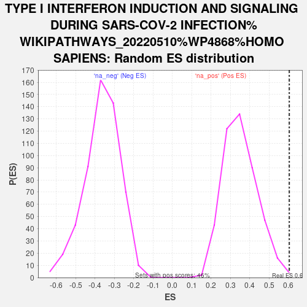

| | | Dataset | deg_ms |
| Phenotype | NoPhenotypeAvailable |
| Upregulated in class | na_pos |
| GeneSet | TYPE I INTERFERON INDUCTION AND SIGNALING DURING SARS-COV-2 INFECTION%WIKIPATHWAYS_20220510%WP4868%HOMO SAPIENS |
| Enrichment Score (ES) | 0.6047606 |
| Normalized Enrichment Score (NES) | 1.717068 |
| Nominal p-value | 0.0021881838 |
| FDR q-value | 0.8938978 |
| FWER p-Value | 1.0 |
Table: GSEA Results Summary
 Fig 1: Enrichment plot: TYPE I INTERFERON INDUCTION AND SIGNALING DURING SARS-COV-2 INFECTION%WIKIPATHWAYS_20220510%WP4868%HOMO SAPIENS
Fig 1: Enrichment plot: TYPE I INTERFERON INDUCTION AND SIGNALING DURING SARS-COV-2 INFECTION%WIKIPATHWAYS_20220510%WP4868%HOMO SAPIENS
Profile of the Running ES Score & Positions of GeneSet Members on the Rank Ordered List
| SYMBOL | RANK IN GENE LIST | RANK METRIC SCORE | RUNNING ES | CORE ENRICHMENT | | 1 | STAT2 | 7 | 6.144 | 0.1401 | Yes |
| 2 | IRF9 | 16 | 5.656 | 0.2689 | Yes |
| 3 | MAVS | 114 | 3.829 | 0.3480 | Yes |
| 4 | IRAK4 | 330 | 2.873 | 0.3948 | Yes |
| 5 | IRF3 | 404 | 2.662 | 0.4493 | Yes |
| 6 | OAS2 | 497 | 2.446 | 0.4971 | Yes |
| 7 | TYK2 | 550 | 2.327 | 0.5458 | Yes |
| 8 | IKBKE | 596 | 2.214 | 0.5925 | Yes |
| 9 | IRF7 | 1168 | 1.503 | 0.5765 | Yes |
| 10 | OAS3 | 1226 | 1.454 | 0.6048 | Yes |
| 11 | MYD88 | 1587 | 1.178 | 0.5999 | No |
| 12 | OAS1 | 3067 | 0.520 | 0.4811 | No |
| 13 | STAT1 | 3090 | 0.513 | 0.4909 | No |
| 14 | EIF2AK2 | 3700 | 0.353 | 0.4452 | No |
| 15 | TRAF3 | 4008 | 0.283 | 0.4245 | No |
| 16 | IFNAR1 | 5469 | 0.030 | 0.2962 | No |
| 17 | IFNAR2 | 5752 | -0.004 | 0.2714 | No |
| 18 | TLR7 | 6370 | -0.107 | 0.2193 | No |
| 19 | IFIH1 | 7527 | -0.346 | 0.1251 | No |
| 20 | TLR4 | 8022 | -0.486 | 0.0926 | No |
| 21 | TLR3 | 8477 | -0.646 | 0.0672 | No |
| 22 | TLR9 | 8873 | -0.812 | 0.0509 | No |
| 23 | TBK1 | 9218 | -0.993 | 0.0433 | No |
| 24 | JAK1 | 10905 | -2.822 | -0.0411 | No |
| 25 | TRAF6 | 11105 | -3.471 | 0.0208 | No |
Table: GSEA details [plain text format]

Fig 2: TYPE I INTERFERON INDUCTION AND SIGNALING DURING SARS-COV-2 INFECTION%WIKIPATHWAYS_20220510%WP4868%HOMO SAPIENS: Random ES distribution
Gene set null distribution of ES for TYPE I INTERFERON INDUCTION AND SIGNALING DURING SARS-COV-2 INFECTION%WIKIPATHWAYS_20220510%WP4868%HOMO SAPIENS